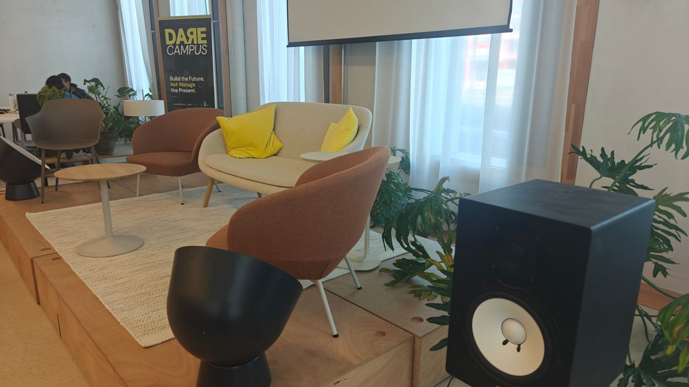
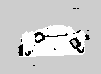
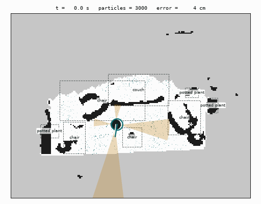
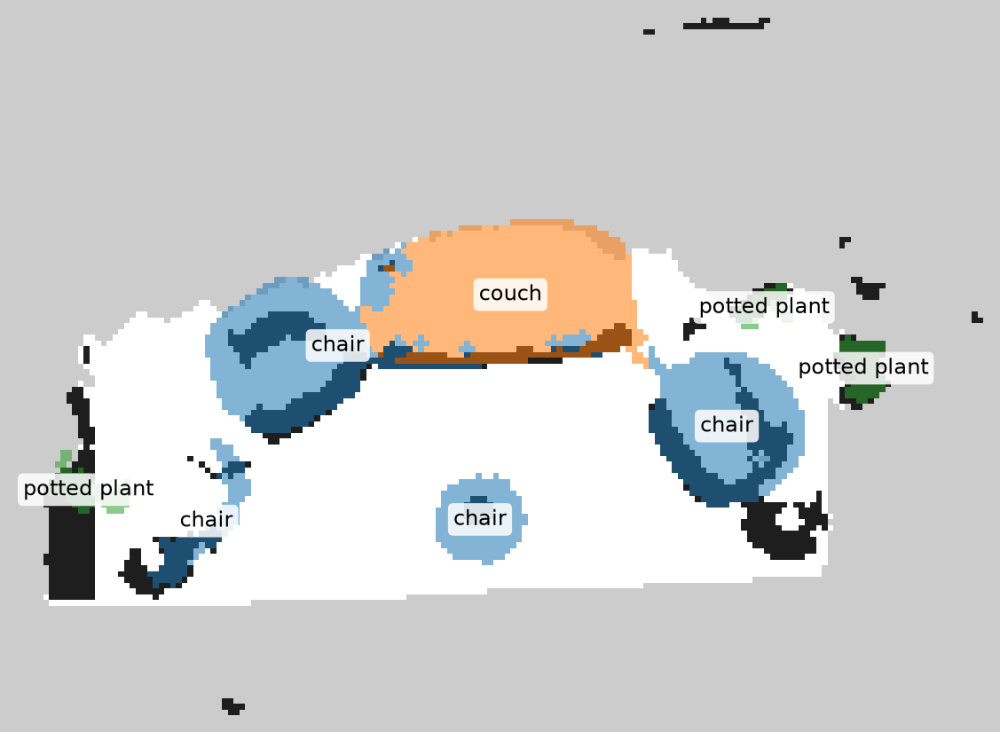
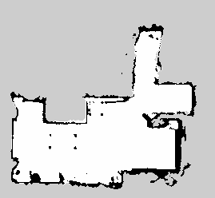
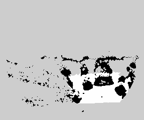
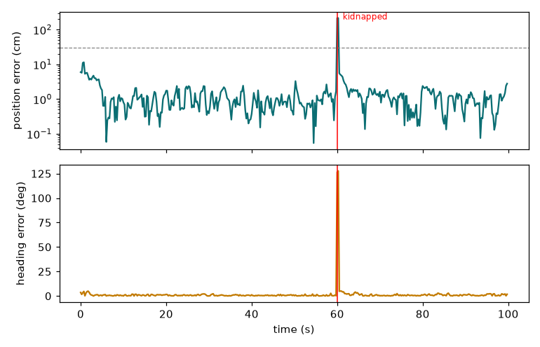

<title>Scan-to-Sonar</title>
<link rel="preconnect" href="https://fonts.googleapis.com">
<link rel="preconnect" href="https://fonts.gstatic.com" crossorigin>
<link rel="stylesheet" href="https://fonts.googleapis.com/css2?family=Archivo:wdth,wght@62..125,400..800&family=IBM+Plex+Sans:wght@400;500;600&family=IBM+Plex+Mono:wght@400;500&display=swap">
<style>
/* Layout: a vertical stack of 16:9 slide frames (one <section> per slide, easy to import elsewhere);
   text scales with the frame width; below 760px frames drop the fixed ratio and stack as cards. */
:root {
  --ground: #e9edeb;      /* cool instrument-panel paper */
  --frame: #f8faf9;       /* slide surface */
  --ink: #15211e;         /* primary text */
  --muted: #56645f;       /* secondary text */
  --rule: #c9d2ce;        /* hairlines, table rules */
  --signal: #0a6b8f;      /* the ultrasonic ping: accent */
  --echo: #b86e00;        /* echo / warning, used sparingly */
  --map-bg: #dfe5e2;      /* backdrop behind occupancy maps */
  --display: "Archivo", "Arial Narrow", system-ui, sans-serif;
  --body: "IBM Plex Sans", system-ui, -apple-system, "Segoe UI", sans-serif;
  --mono: "IBM Plex Mono", ui-monospace, "Cascadia Mono", Consolas, monospace;
}
@media (prefers-color-scheme: dark) {
  :root:not([data-theme="light"]) {
    --ground: #0f1614; --frame: #17201d; --ink: #e4ebe8; --muted: #9aa9a3; --rule: #2e3a36;
    --signal: #4fb8dc; --echo: #e0a040; --map-bg: #26302d; color-scheme: dark;
  }
}
:root[data-theme="dark"] {
  --ground: #0f1614; --frame: #17201d; --ink: #e4ebe8; --muted: #9aa9a3; --rule: #2e3a36;
  --signal: #4fb8dc; --echo: #e0a040; --map-bg: #26302d; color-scheme: dark;
}

* { box-sizing: border-box; }
body { background: var(--ground); color: var(--ink); font-family: var(--body); margin: 0; }
.deck { display: flex; flex-direction: column; align-items: center; gap: 28px;
        padding-inline: 16px; padding-block: 28px 64px; }

.slide { position: relative; width: 100%; max-width: 1280px; aspect-ratio: 16 / 9;
         background: var(--frame); border: 1px solid var(--rule); border-radius: 4px;
         container-type: inline-size; overflow: hidden; scroll-margin-top: 16px; }
.slide:focus-visible { outline: 3px solid var(--signal); outline-offset: 3px; }
.in { position: absolute; inset: 0; padding: 4.6cqw 5.4cqw 4cqw; display: flex; flex-direction: column; gap: 2.2cqw; }

/* Running header on every slide: section tag left, slide number right (true position in the deck) */
.tag { display: flex; justify-content: space-between; font-family: var(--mono); font-size: 1.05cqw;
       letter-spacing: .08em; text-transform: uppercase; color: var(--muted); }
.tag b { color: var(--signal); font-weight: 500; }

h1, h2 { font-family: var(--display); font-stretch: 72%; font-weight: 760; line-height: .98;
         margin: 0; text-wrap: balance; letter-spacing: -.01em; }
h1 { font-size: 8.6cqw; }
h2 { font-size: 4.3cqw; }
h3 { font-family: var(--display); font-stretch: 85%; font-weight: 700; font-size: 1.75cqw; margin: 0; }
p, li { font-size: 1.62cqw; line-height: 1.45; margin: 0; max-width: 62ch; }
.lede { font-size: 2.15cqw; line-height: 1.35; color: var(--ink); max-width: 44ch; }
.muted { color: var(--muted); }
.mono { font-family: var(--mono); font-variant-numeric: tabular-nums; }
.sig { color: var(--signal); }

.grow { flex: 1; min-height: 0; }
.row { display: grid; gap: 2.4cqw; min-height: 0; }
.row > * { min-width: 0; min-height: 0; }

figure { margin: 0; display: flex; flex-direction: column; gap: .7cqw; min-height: 0; }
figure img { display: block; width: 100%; height: 100%; min-height: 0; object-fit: contain; border-radius: 3px; }
figcaption { font-family: var(--mono); font-size: 1.02cqw; color: var(--muted); letter-spacing: .02em; }
.map { background: var(--map-bg); padding: .8cqw; border-radius: 3px; flex: 1; min-height: 0; display: flex; }
.map img { image-rendering: pixelated; }
.photo img { object-fit: cover; }

/* Sonar-cone motif: the one decorative element, drawn once on the title slide */
.cone { position: absolute; right: -6cqw; top: -10cqw; width: 58cqw; height: 58cqw; pointer-events: none; opacity: .9; }
.cone circle { fill: none; stroke: var(--signal); stroke-width: .35; }
.cone path { fill: var(--signal); opacity: .07; }

/* Title slide */
.title .in { justify-content: flex-end; gap: 2cqw; }
.title .pair { position: absolute; right: 5.4cqw; top: 9cqw; width: 46cqw; display: grid;
               grid-template-columns: 1.4fr .9fr; gap: 1.2cqw; align-items: stretch; height: 24cqw; }
.title .pair .map { padding: .6cqw; }
.byline { font-family: var(--mono); font-size: 1.15cqw; color: var(--muted); letter-spacing: .03em; }

/* Numbered pipeline: real sequence, so numbers carry meaning */
.steps { list-style: none; padding: 0; margin: 0; display: grid; grid-template-columns: repeat(4, 1fr); gap: 1.6cqw; }
.steps li { border-top: 2px solid var(--signal); padding-top: 1.2cqw; display: flex; flex-direction: column; gap: .8cqw; max-width: none; }
.steps .n { font-family: var(--mono); font-size: 1.1cqw; color: var(--signal); }
.steps p { font-size: 1.42cqw; color: var(--muted); }
.steps .io { font-family: var(--mono); font-size: 1.1cqw; color: var(--ink); background: var(--map-bg); padding: .5cqw .7cqw; border-radius: 2px; align-self: start; }

/* Figures: label / value pairs */
.stats { display: grid; grid-template-columns: repeat(4, 1fr); gap: 1.6cqw; }
.stat { display: flex; flex-direction: column; gap: .4cqw; border-left: 1px solid var(--rule); padding-left: 1.2cqw; }
.stat .v { font-family: var(--display); font-stretch: 75%; font-weight: 720; font-size: 3.4cqw; line-height: 1; font-variant-numeric: tabular-nums; }
.stat .k { font-size: 1.2cqw; color: var(--muted); line-height: 1.3; }

table { width: 100%; border-collapse: collapse; font-size: 1.38cqw; font-variant-numeric: tabular-nums; }
th { text-align: left; font-family: var(--mono); font-weight: 500; font-size: 1.05cqw; text-transform: uppercase;
     letter-spacing: .06em; color: var(--muted); padding: .7cqw .8cqw; border-bottom: 1.5px solid var(--ink); }
td { padding: .8cqw .8cqw; border-bottom: 1px solid var(--rule); vertical-align: top; }
td.num { font-family: var(--mono); white-space: nowrap; }
tr.best td:first-child { box-shadow: inset 3px 0 0 var(--signal); }
.tablewrap { overflow-x: auto; }

ul.plain { margin: 0; padding-left: 1.3em; display: flex; flex-direction: column; gap: .8cqw; }
ul.plain li::marker { color: var(--signal); }
.warn { color: var(--echo); font-weight: 600; }
.appendix .tag b { color: var(--echo); }

.hint { font-family: var(--mono); font-size: 12px; color: var(--muted); text-align: center; }

/* Narrow screens: drop the 16:9 frame, keep one column, switch cqw sizes to rem */
@media (max-width: 760px) {
  .slide { aspect-ratio: auto; }
  .in { position: static; padding: 22px 18px; gap: 16px; }
  .tag { font-size: 11px; }
  h1 { font-size: 46px; } h2 { font-size: 30px; } h3 { font-size: 17px; }
  p, li, .lede { font-size: 15px; }
  .row, .steps, .stats { grid-template-columns: 1fr !important; }
  .title .pair { position: static; width: 100%; height: 190px; }
  .cone { display: none; }
  .steps .n, .steps .io, figcaption, .byline { font-size: 12px; }
  .steps p { font-size: 14px; }
  .stat .v { font-size: 28px; } .stat .k { font-size: 13px; }
  table { font-size: 13px; } th { font-size: 11px; }
  figure img { height: auto; max-height: 320px; }
  .map { min-height: 160px; }
}
@media (prefers-reduced-motion: reduce) { html { scroll-behavior: auto; } }
html { scroll-behavior: smooth; }
</style>

<main class="deck" id="deck">

<!-- 1. Title -->
<section class="slide title" tabindex="-1" aria-label="Title">
  <svg class="cone" viewBox="0 0 100 100" aria-hidden="true">
    <path d="M100 0 L18 38 A84 84 0 0 0 62 82 Z"></path>
    <circle cx="100" cy="0" r="30"></circle><circle cx="100" cy="0" r="52"></circle><circle cx="100" cy="0" r="74"></circle>
  </svg>
  <div class="pair">
    <figure class="photo"></figure>
    <figure><div class="map"></div></figure>
  </div>
  <div class="in">
    <div class="tag"><span>Physical AI Hackathon · Swiss {ai} Weeks · Perceive / Decide / Act</span><span>01</span></div>
    <div class="grow"></div>
    <h1>Scan-to-Sonar</h1>
    <p class="lede">Scan a room once with a phone. A robot with four ultrasonic sensors finds itself in that map.</p>
    <p class="byline">Vincent · OnePlus 12 + laptop · no robot hardware, everything robot-side is simulated</p>
  </div>
</section>

<!-- 2. Problem -->
<section class="slide" tabindex="-1" aria-label="Problem">
  <div class="in">
    <div class="tag"><span><b>Perceive</b> · the problem</span><span>02</span></div>
    <h2>A cheap robot does not know where it is</h2>
    <div class="row grow" style="grid-template-columns: 1.15fr 1fr; align-items: center;">
      <ul class="plain">
        <li>Lidar and cameras cost money, power and compute.</li>
        <li>An ultrasonic sensor costs little, but it returns one number: the distance to the nearest echo inside a 25° cone, up to about 4 m.</li>
        <li>Wheel encoders drift. After a few metres the robot's own position guess is wrong.</li>
        <li><strong>Question:</strong> with a map of the room, are four distances and the wheel counts enough to say where the robot is?</li>
      </ul>
      <div class="stats" style="grid-template-columns: 1fr 1fr;">
        <div class="stat"><span class="v mono">4</span><span class="k">sonars: front, left, right, back</span></div>
        <div class="stat"><span class="v mono">4 Hz</span><span class="k">readings per sensor</span></div>
        <div class="stat"><span class="v mono">25°</span><span class="k">beam width (HC-SR04 class)</span></div>
        <div class="stat"><span class="v mono">0</span><span class="k">cameras on the robot</span></div>
      </div>
    </div>
  </div>
</section>

<!-- 3. Pipeline -->
<section class="slide" tabindex="-1" aria-label="Pipeline">
  <div class="in">
    <div class="tag"><span><b>Perceive → Decide</b> · the pipeline</span><span>03</span></div>
    <h2>Phone scan in, robot pose out</h2>
    <ol class="steps">
      <li><span class="n">1 · capture</span><h3>Scan the room once</h3>
        <p>Scaniverse on the OnePlus 12 (Gaussian splat), 13 plain photos run through VGGT, or any LiDAR mesh.</p>
        <span class="io">.ply / .glb / photos</span></li>
      <li><span class="n">2 · level and slice</span><h3>Keep what the sonar hears</h3>
        <p>Find the up axis and the floor, align the walls, keep only 5 to 35 cm above the floor.</p>
        <span class="io">band 0.05–0.35 m</span></li>
      <li><span class="n">3 · map</span><h3>2D occupancy grid</h3>
        <p>3 cm cells plus a distance field, so thousands of sonar rays can be cast per step.</p>
        <span class="io">3 cm · ROS map format</span></li>
      <li><span class="n">4 · localize</span><h3>Particle filter</h3>
        <p>600 to 3000 pose guesses move with the wheels and are scored against the four readings.</p>
        <span class="io">x, y, θ at 4 Hz</span></li>
    </ol>
    <div class="grow"></div>
    <p class="muted">The robot never sees the ground truth. It only has the map from the scan, its sonars and its wheels.</p>
  </div>
</section>

<!-- 4. This stage -->
<section class="slide" tabindex="-1" aria-label="Result on this stage" data-examples="lounge-photos">
  <div class="in">
    <div class="tag"><span><b>Decide</b> · result on the stage behind me</span><span>04</span></div>
    <h2>This lounge, from 13 photos to a working map</h2>
    <div class="row grow" style="grid-template-columns: 1fr 1fr 1.25fr;">
      <figure class="photo"><figcaption>13 phone photos</figcaption></figure>
      <figure><div class="map"></div><figcaption>map: 4.4 × 2.0 m of platform floor</figcaption></figure>
      <figure><figcaption>simulated robot, particles, sonar cones</figcaption></figure>
    </div>
    <div class="stats">
      <div class="stat"><span class="v">111 s</span><span class="k">photos to 3D on a 4 GB laptop GPU</span></div>
      <div class="stat"><span class="v">&lt; 1 s</span><span class="k">of driving to localize</span></div>
      <div class="stat"><span class="v">~1 cm</span><span class="k">position error after (simulation)</span></div>
      <div class="stat"><span class="v">~1 s</span><span class="k">to recover after being picked up and moved</span></div>
    </div>
  </div>
</section>

<!-- 5. Objects -->
<section class="slide" tabindex="-1" aria-label="Objects on the map" data-examples="lounge-photos">
  <div class="in">
    <div class="tag"><span><b>Perceive</b> · what is on the map</span><span>05</span></div>
    <h2>The map knows what things are</h2>
    <div class="row grow" style="grid-template-columns: 1.25fr 1fr;">
      <figure><div class="map" style="background: var(--map-bg);"></div>
        <figcaption>YOLO11 segmentation on the same 13 photos, lifted onto the map</figcaption></figure>
      <div style="display:flex;flex-direction:column;gap:1.4cqw;min-width:0;">
        <div class="tablewrap"><table>
          <thead><tr><th>Label</th><th>Size</th><th>Photos</th><th>Really</th></tr></thead>
          <tbody>
            <tr class="best"><td>couch</td><td class="num">1.50 × 0.78 m</td><td class="num">11</td><td>sofa</td></tr>
            <tr><td>chair</td><td class="num">0.81 × 0.84 m</td><td class="num">13</td><td>right armchair</td></tr>
            <tr><td>chair</td><td class="num">2.10 × 0.99 m</td><td class="num">13</td><td>left armchair + grey chair</td></tr>
            <tr><td>potted plant ×3</td><td class="num">0.2–0.5 m</td><td class="num">3–5</td><td>plants</td></tr>
            <tr><td>chair</td><td class="num">0.54 × 0.78 m</td><td class="num">11</td><td class="warn">black lamp</td></tr>
            <tr><td>chair</td><td class="num">0.48 × 0.48 m</td><td class="num">7</td><td class="warn">side table</td></tr>
          </tbody>
        </table></div>
        <p class="muted">Every 3D point knows the photo pixel it came from, so it takes that pixel's label. Two photos must agree per map cell; cushion fragments are merged into the couch. The detector has no "lamp" class, so 2 of 8 labels are wrong.</p>
        <p>The sonars still cannot tell a chair from a wall. The labels are for goals: <strong>"drive to the couch"</strong>.</p>
      </div>
    </div>
  </div>
</section>

<!-- 6. Robustness -->
<section class="slide" tabindex="-1" aria-label="Three inputs" data-examples="home-lidar lounge-splat lounge-photos">
  <div class="in">
    <div class="tag"><span><b>Decide</b> · does it hold up</span><span>06</span></div>
    <h2>Three ways to get a map, one pipeline</h2>
    <div class="row grow" style="grid-template-columns: repeat(3, 1fr);">
      <figure><div class="map"></div>
        <figcaption>LiDAR mesh (ARKitScenes home) · 7.0 × 6.2 m</figcaption></figure>
      <figure><div class="map"></div>
        <figcaption>Scaniverse splat of this stage · metric</figcaption></figure>
      <figure><div class="map"></div>
        <figcaption>13 photos + VGGT · cleanest map</figcaption></figure>
    </div>
    <div class="tablewrap"><table>
      <thead><tr><th>Test</th><th>Localized</th><th>Error after</th><th>Kidnap recovery</th></tr></thead>
      <tbody>
        <tr><td>Home scan + 6 obstacles that are not in the map</td><td class="num">step 6</td><td class="num">1–3 cm</td><td class="num">~9 s</td></tr>
        <tr><td>Scaniverse splat, 5 runs</td><td class="num">5 / 5</td><td class="num">~1 cm</td><td class="num">5 / 5</td></tr>
        <tr class="best"><td>Photos + VGGT</td><td class="num">&lt; 1 s</td><td class="num">~1 cm</td><td class="num">~1 s</td></tr>
      </tbody>
    </table></div>
  </div>
</section>

<!-- 7. Limits and next -->
<section class="slide" tabindex="-1" aria-label="Limits and next steps">
  <div class="in">
    <div class="tag"><span><b>Act</b> · what is real, what is next</span><span>07</span></div>
    <h2>What we know, and what comes next</h2>
    <div class="row grow" style="grid-template-columns: 1fr 1fr;">
      <div style="display:flex;flex-direction:column;gap:1.4cqw;">
        <h3>Limits</h3>
        <ul class="plain">
          <li><span class="warn">The centimetre numbers are optimistic.</span> The simulated sonar uses the same model as the filter. Real sensors have side lobes, multipath and cross-talk: plan for 10 to 30 cm.</li>
          <li>Maps from photos have no scale. One tape measurement fixes it (<span class="mono">--ref</span>).</li>
          <li>A 30 cm stage edge is invisible to sonar. The robot needs a cliff sensor there.</li>
        </ul>
      </div>
      <div style="display:flex;flex-direction:column;gap:1.4cqw;">
        <h3>Next</h3>
        <ul class="plain">
          <li>Browser simulator that runs on a phone: drop an obstacle, kidnap the robot, watch it recover.</li>
          <li>Act: pick a goal (a point or an object, "the couch"), plan a path on the map, drive there using only the estimated pose.</li>
          <li>Hardware: ESP32, four HC-SR04 fired 60 ms apart, encoder motors, same filter on the laptop.</li>
        </ul>
      </div>
    </div>
    <p class="lede">Phone scan in the morning, localizing robot by the afternoon.</p>
  </div>
</section>

<!-- A1. Benchmark -->
<section class="slide appendix" tabindex="-1" aria-label="Appendix: benchmark">
  <div class="in">
    <div class="tag"><span><b>Appendix A</b> · benchmark</span><span>08</span></div>
    <h2>Benchmark: 15 runs per setup, unknown start</h2>
    <p class="muted">Synthetic 7 × 5 m flat. The real world differs from the map: a glass partition, a chair moved after the scan, 1.5 % scale error. 100 s per run, robot wanders at 0.25 m/s. Converged = under 30 cm and 20° for 5 s.</p>
    <div class="tablewrap"><table>
      <thead><tr><th>Setup</th><th>Converged</th><th>Distance to converge</th><th>Time</th><th>Position error</th><th>Heading error</th></tr></thead>
      <tbody>
        <tr class="best"><td>4 sonars (front, left, right, back)</td><td class="num">14 / 15</td><td class="num">0.8 m</td><td class="num">4 s</td><td class="num">4 cm</td><td class="num">1.7°</td></tr>
        <tr><td>2 sonars (front, back)</td><td class="num">14 / 15</td><td class="num">2.5 m</td><td class="num">13 s</td><td class="num">58 cm</td><td class="num">21.6°</td></tr>
        <tr><td>4 sonars, narrow 10° beam</td><td class="num">14 / 15</td><td class="num">0.3 m</td><td class="num">2 s</td><td class="num">4 cm</td><td class="num">1.5°</td></tr>
        <tr><td>4 sonars, harsh: 30° beam, 3× noise, 8 % ghost echoes</td><td class="num">13 / 15</td><td class="num">1.1 m</td><td class="num">6 s</td><td class="num">5 cm</td><td class="num">2.2°</td></tr>
      </tbody>
    </table></div>
    <ul class="plain">
      <li>Four sonars is the minimum worth building. With two, the filter locks on and then drifts.</li>
      <li>Narrow beams help more than expected: 10° localizes about 3× faster than 25°.</li>
      <li>Medians; distances and times measured from the start of the run.</li>
    </ul>
  </div>
</section>

<!-- A2. Map building -->
<section class="slide appendix" tabindex="-1" aria-label="Appendix: map building">
  <div class="in">
    <div class="tag"><span><b>Appendix B</b> · from scan to map</span><span>09</span></div>
    <h2>Turning a phone scan into a sonar map</h2>
    <div class="row grow" style="grid-template-columns: 1fr 1fr;">
      <ul class="plain">
        <li><strong>Any input.</strong> Meshes (multi-part .glb), coloured point clouds, Gaussian splats (keeps opaque splats under 5 cm). Clouds over 1M points are thinned to one point per 2 cm.</li>
        <li><strong>Up axis.</strong> The largest flat plane gives the axis; furniture density near each end says which way is up (the ceiling can be the largest plane).</li>
        <li><strong>Floor.</strong> RANSAC plane among the lowest points, rotated flat. <span class="mono">--floor-offset</span> moves it to a stage or platform.</li>
      </ul>
      <ul class="plain">
        <li><strong>Walls.</strong> Rotate about the vertical until wall points form the sharpest x/y histogram peaks (Manhattan assumption).</li>
        <li><strong>Scale.</strong> Phone scans are metric. Photo maps: VGGT, camera-height hint, then <span class="mono">--ref</span> with one tape distance. Cross-check: stage height 0.29 m in both the splat and the photo map.</li>
        <li><strong>Quality report.</strong> Floor coverage, gaps in the wall outline with positions, room size. Printed on every conversion.</li>
      </ul>
    </div>
  </div>
</section>

<!-- A3. Filter -->
<section class="slide appendix" tabindex="-1" aria-label="Appendix: particle filter">
  <div class="in">
    <div class="tag"><span><b>Appendix C</b> · the filter</span><span>10</span></div>
    <h2>Augmented Monte Carlo localization</h2>
    <div class="row grow" style="grid-template-columns: 1fr 1fr;">
      <ul class="plain">
        <li><strong>Motion.</strong> Odometry model: each particle moves like the wheels said, plus noise that grows with rotation and distance.</li>
        <li><strong>Sensor.</strong> Each sonar is a fan of 5 rays over its 25° cone, cast through the distance field. Beams hitting a wall more than 40° off its normal return no echo (specular). 2 % random short readings.</li>
        <li><strong>Resampling.</strong> Low-variance resampling; 3000 particles while searching, 600 once the cloud is tighter than 35 cm.</li>
      </ul>
      <ul class="plain">
        <li><strong>Recovery.</strong> Short- and long-term average likelihoods; when the short one drops, random particles are injected. This is how it recovers from a kidnap.</li>
        <li><strong>Estimate.</strong> Mean of the largest particle cluster, so a second hypothesis does not pull the answer into a wall.</li>
        <li><strong>Speed.</strong> Fully vectorised NumPy: 3000 particles × 4 sonars × 5 rays per step, a 100 s run simulates in about 3 s.</li>
      </ul>
    </div>
  </div>
</section>

<!-- A4. Scale checks -->
<section class="slide appendix" tabindex="-1" aria-label="Appendix: checks">
  <div class="in">
    <div class="tag"><span><b>Appendix D</b> · how we checked</span><span>11</span></div>
    <h2>Checks against the real world</h2>
    <div class="row grow" style="grid-template-columns: 1.1fr 1fr;">
      <div class="tablewrap"><table>
        <thead><tr><th>Check</th><th>Measured in map</th><th>Expected</th></tr></thead>
        <tbody>
          <tr><td>Ceiling height, home scan</td><td class="num">2.25–2.30 m</td><td>apartment ceiling</td></tr>
          <tr><td>Table top height, home scan</td><td class="num">0.75 m</td><td>standard table</td></tr>
          <tr><td>Desk leg spacing, home scan</td><td class="num">0.95 × 0.47 m</td><td>100 × 50 cm desk</td></tr>
          <tr><td>Stage height, splat vs photos</td><td class="num">0.28–0.30 m</td><td>same stage, ~5 % apart</td></tr>
          <tr><td>Synthetic room, wall to wall</td><td class="num">4.200 m</td><td class="num">4.200 m</td></tr>
        </tbody>
      </table></div>
      <figure><figcaption>stage map: error over 100 s, kidnapped at 60 s</figcaption></figure>
    </div>
    <p class="muted">19 automated tests cover up-axis detection, splat reading, scaling, cropping, platforms and the filter.</p>
  </div>
</section>

<p class="hint">← → or Page Up / Page Down to move between slides</p>
</main>

<script>
(() => {
  const slides = [...document.querySelectorAll(".slide")];
  const current = () => {
    const mid = window.innerHeight / 2;
    let best = 0, bestD = Infinity;
    slides.forEach((s, i) => { const r = s.getBoundingClientRect(); const d = Math.abs(r.top + r.height / 2 - mid); if (d < bestD) { bestD = d; best = i; } });
    return best;
  };
  document.addEventListener("keydown", (e) => {
    if (e.target.closest && e.target.closest("input, textarea")) return;
    const next = ["ArrowRight", "ArrowDown", "PageDown", " "].includes(e.key);
    const prev = ["ArrowLeft", "ArrowUp", "PageUp"].includes(e.key);
    if (!next && !prev) return;
    e.preventDefault();
    const i = Math.max(0, Math.min(slides.length - 1, current() + (next ? 1 : -1)));
    slides[i].scrollIntoView({ block: "center" });
    slides[i].focus({ preventScroll: true });
  });
})();
</script>
